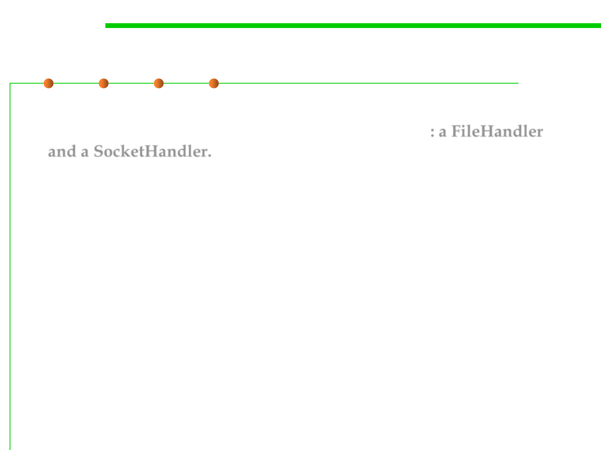

java.util.logging: Handler
7.4 Debugging
▪ To send log records elsewhere, add another handler. The logging
API provides two useful handlers for this purpose: a FileHandler
and a SocketHandler.
▪ The SocketHandler sends records to a specified host and port.
▪ Of greater interest is the FileHandler that collects records in a file.
– By default, the records are formatted in XML.
FileHandler handler = new FileHandler(“c:/log/20180418.log”);
logger.addHandler(handler);
handler.setLevel(Level.FINEST);
logger.addHandler(handler);
log.severe("severe level");
log.warning("warning level");
log.info("info level");
log.config("config level");